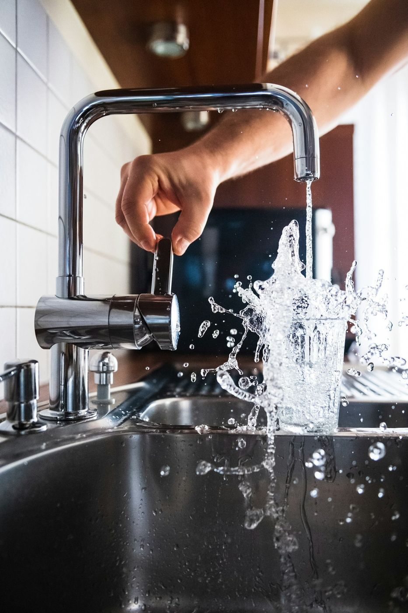
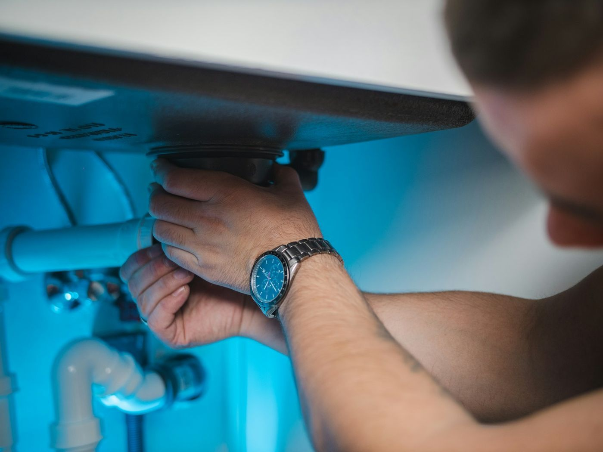
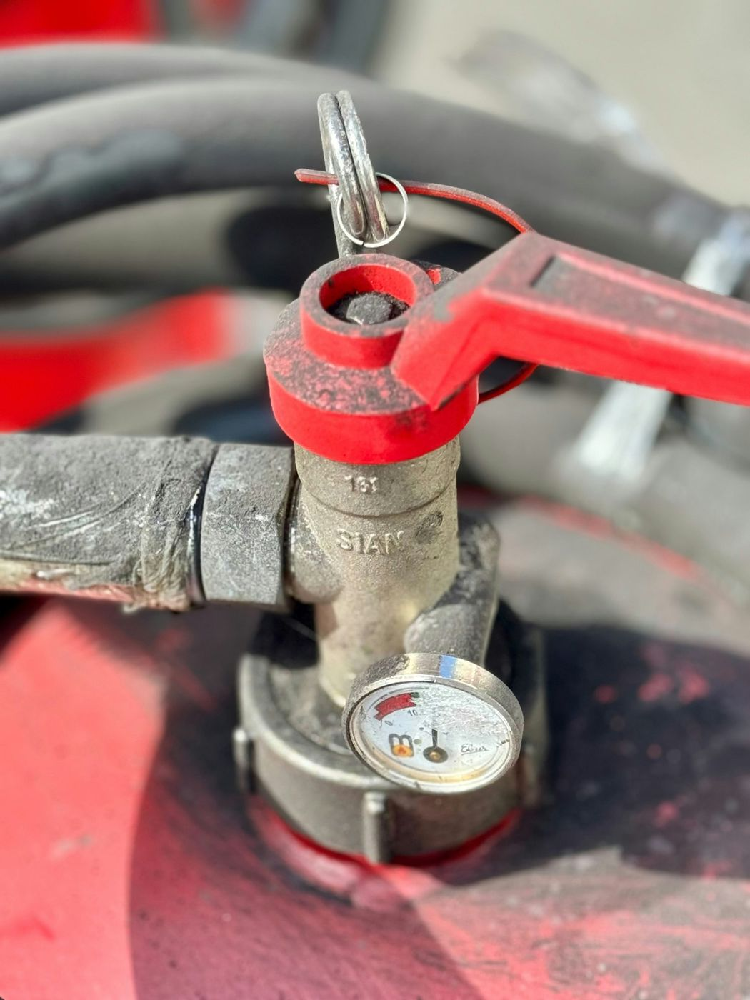
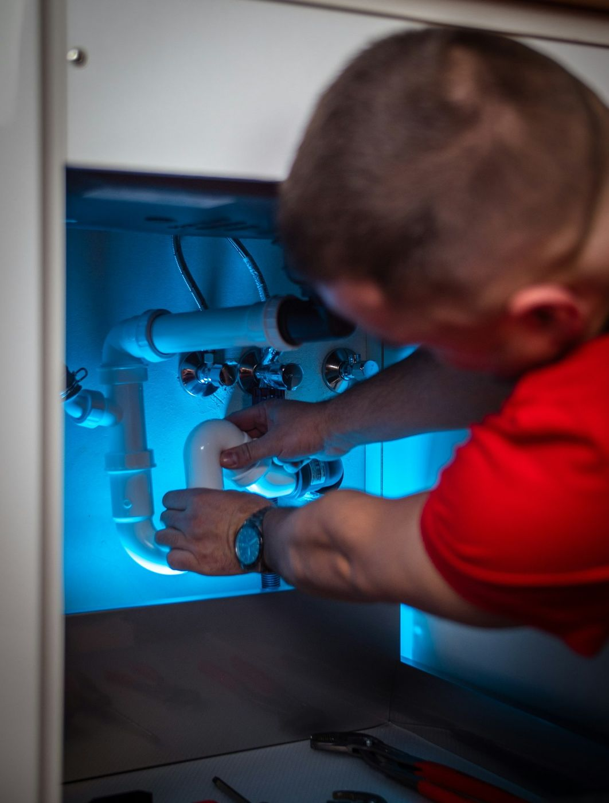

Milano e provincia
Perdite, caldaie e bagni: arriviamo noi.
Idraulico a Milano e provincia: pronto intervento, caldaie e rifacimento bagni. Preventivo chiaro prima di iniziare.

- Preventivo gratuito
- Intervento in giornata
- Lavoro garantito
- Casa pulita a fine lavoro
Cosa facciamo
Chiedi un preventivoPronto intervento
Perdite, tubi rotti e scarichi otturati: interveniamo in giornata.
Caldaie e scaldabagni
Installazione, sostituzione e manutenzione, con pratiche e libretto in regola.
Rifacimento bagni
Dal progetto alla posa: un solo referente per tutto il lavoro.
Ricerca perdite
Troviamo la perdita senza rompere mezza casa, con strumenti a ultrasuoni.
Come lavoriamo
Ci chiami o scrivi
Ci racconti il problema, anche con una foto su WhatsApp.
Preventivo chiaro
Veniamo a vedere e ti diciamo quanto costa, prima di toccare qualsiasi cosa.
Lavoro fatto
Lavoriamo puliti e garantiamo ogni intervento.
Dove lavoriamo
- Milano
- Sesto San Giovanni
- Cinisello Balsamo
- Cologno Monzese
- Segrate
- Rozzano
- Assago
- Corsico

Idraulica Rossi lavora a Milano e dintorni da più di vent'anni, per famiglie, negozi e condomini.
Diamo sempre un preventivo chiaro prima di iniziare e lasciamo la casa pulita come l'abbiamo trovata.



Orari e indirizzo
- Lunedì – Venerdì
- 8:00 – 18:00
- Sabato
- 8:00 – 13:00
- Urgenze
- Su chiamata